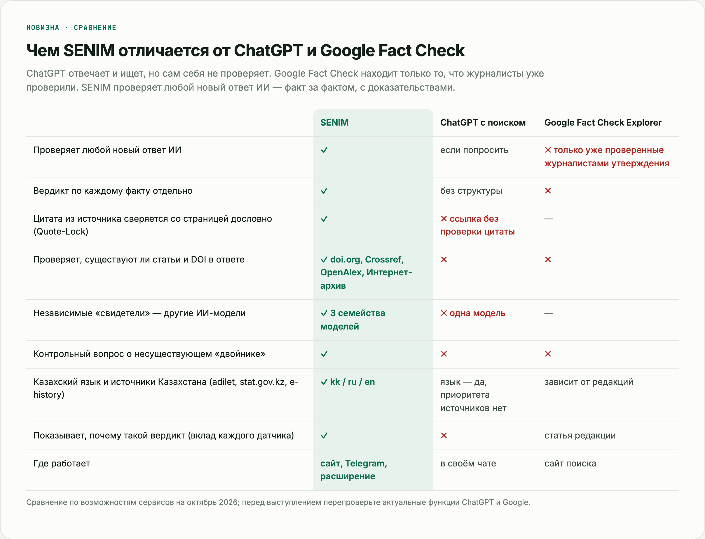

compare.pngЧем SENIM отличается от ChatGPT и Google Fact Check
Что сказать
ChatGPT отвечает и ищет, но сам себя не проверяет: даёт ссылку, но не сверяет цитату и может сам выдумать статью. Google Fact Check находит только то, что журналисты уже проверили, а новый ответ ИИ там не проверить. SENIM проверяет любой новый ответ ИИ, факт за фактом, с дословной цитатой из источника, и работает на казахском.
Перед выступлением
Откройте ChatGPT и Google Fact Check и проверьте строки таблицы: функции сервисов быстро меняются.